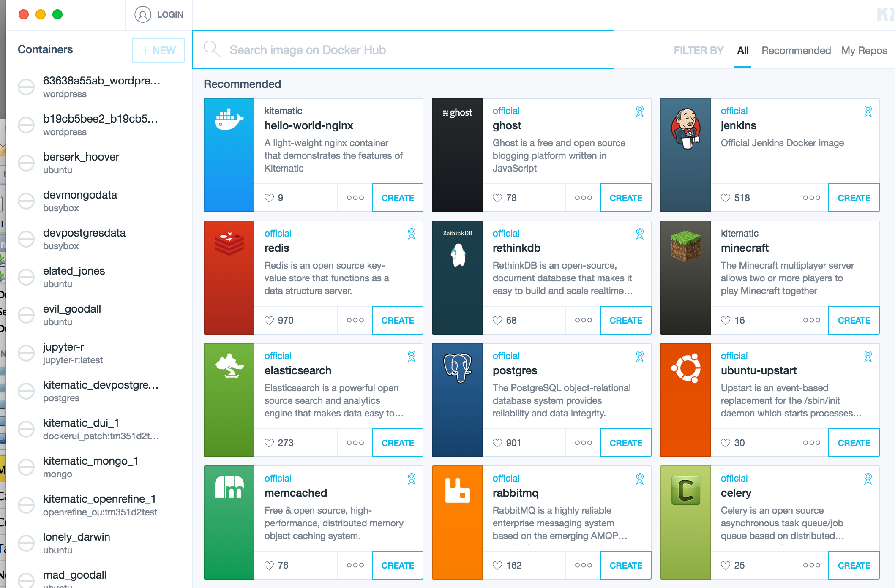
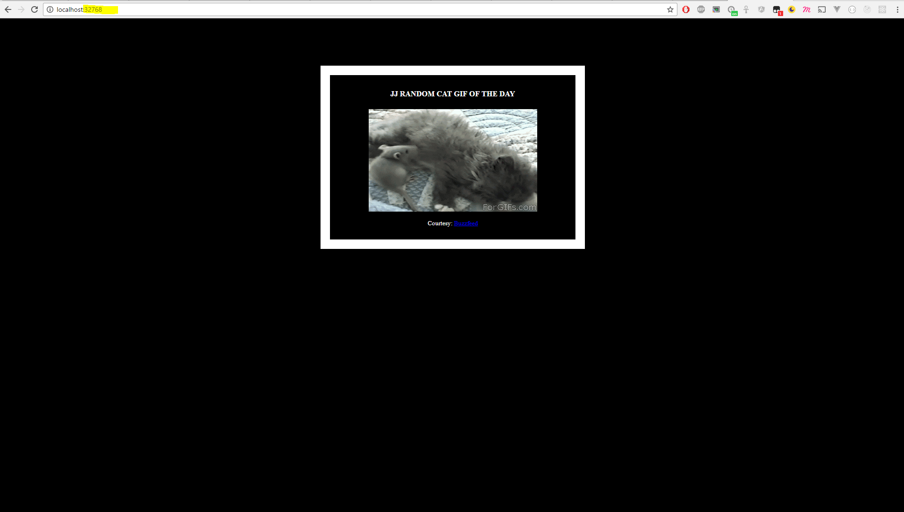

PayEx och Valen
Vad är docker?
- Docker är en öppen plattform för att utveckla, distribuera och exekvera applikationer.
- Med hjälp av docker kan vi packetera applikationer och dess beroenden i ett inkappslat och isolerat format
Glasklart?
Vad är docker inte?
Docker != VMs

Docker != Skivat bröd

Docker != Skivat bröd
- Samma logistiska utmaningar
- Docker är inte per automatik microservices
- Kräver i vissa fall mer förståelse för drift
- Passar inte alla typer av applikationer
- Inte alltid lätt
The good news!
Varför docker?
- Köra godtycklig kod i egna fullt isolerade kontainrar, plattformsagnostiskt-ish
- Kontainrar är lättviktiga, flyktiga och snabbt startade
- Separation mellan applikation och infrastruktur
- Skalbar, multidimensionell drifthockey(?)
- Utnyttja ett ständigt växande ekosystem genom komposition
Hur dockererar man?
Docker Engine

Docker Hub
docker run
Vad hände?
- Docker CLI kontaktar Daemon
- Docker Daemon kontrollerar om avbilden "hello-world" finns lokalt
- Daemon laddar hem avbilden från Docker Hub
- Daemon skapar en ny container från avbilden och exekverar det som avbilden specificerar
- Resultatet skickas från Daemon till CLI och visas upp
"coolt"
Vi lägger i en växel till
C:> docker run -d -P harishj/catweb
f5d7033fafb78816aa353ad257adcc51ac3c267781281c1557aa9abe3883b525
C:> docker ps
CONTAINER ID IMAGE PORTS
f5d7033fafb7 harishj/catweb 0.0.0.0:32768->5000/tcp
*Micdrop*
Docker kommandon
Composition med Dockerfile
FROM node:boron //Basavbild
# Create app directory
RUN mkdir -p /usr/src/app
WORKDIR /usr/src/app
# Install app dependencies
COPY package.json /usr/src/app/
RUN npm install
# Bundle app source
COPY . /usr/src/app
EXPOSE 8080
CMD [ "npm", "start" ]